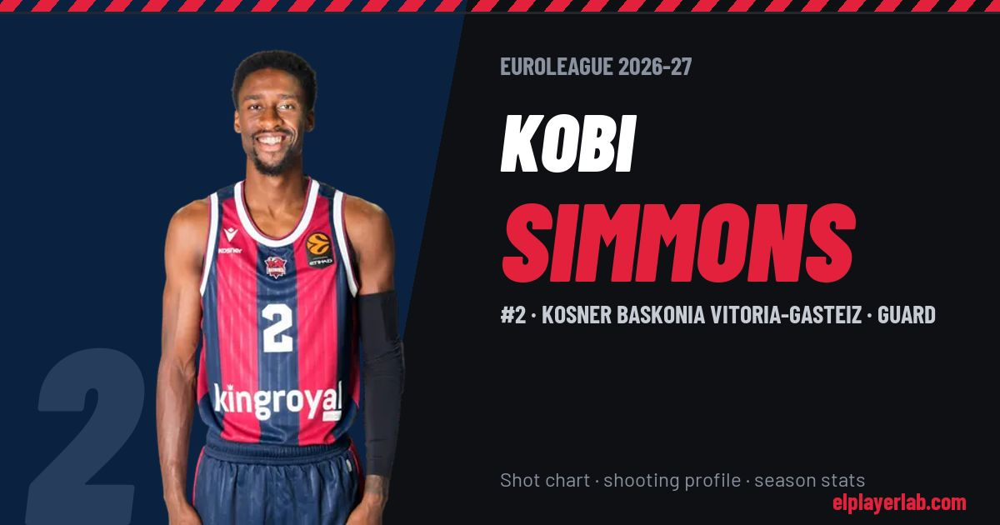

Kosner Baskonia Vitoria-Gasteiz · Euroleague 2026-27
Kobi Simmons
#2 · Guard · Kosner Baskonia Vitoria-Gasteiz · 2026-27 · 3 games · 5.0 pts · 2.3 reb · 3.7 ast a game

- Number
- 2
- Position
- Guard
- Height
- 192 cm
- Weight
- 77 kg
- Born
- 1997-07-04
- Country
- United States of America
Career
- Baskonia 2025-2027
- Gigantes de Carolina 2025
- Zhejiang Golden Bulls 2024-2025
- Toronto Raptors (NBA) 2023-2024
- Raptors 905 2023-2024
- Greensboro Swarm (loan) 2023
- Charlotte Hornets (NBA) 2022-2023
- Greensboro Swarm 2022-2023
- Stal Ostrów Wielkopolski 2021-2022
- Greensboro Swarm 2019-2021
- Canton Charge (loan) 2019
- Cleveland Cavaliers (NBA) 2018-2019
- Canton Charge 2018-2019
- Memphis Hustle (loan) 2017-2018
- Memphis Grizzlies (NBA) 2017-2018
- Arizona (NCAA) 2016-2017
Euroleague Player Lab: shot charts, shooting profiles and season stats for every player, rebuilt after every game.